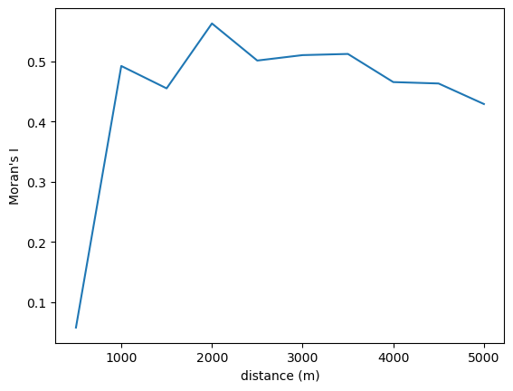
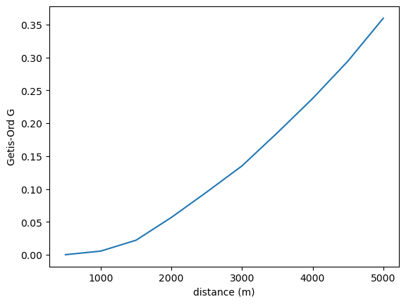
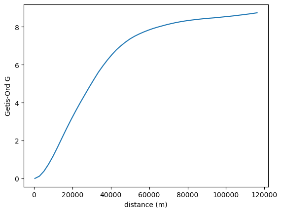

Correlogram¶
%load_ext watermark
%watermark -a 'eli knaap'
%load_ext autoreload
%autoreload 2
import geopandas as gpd
from libpysal import examples
from esda import correlogram
Author: eli knaap
sac = gpd.read_file(examples.load_example("Sacramento1").get_path("sacramentot2.shp"))
Downloading Sacramento1 to /home/runner/.local/share/pysal/Sacramento1
sac = sac.to_crs(sac.estimate_utm_crs()) # now in meters)
correlogram?
from esda import G, Geary, Moran
Distance Bands¶
# Create a liste of distances between 500 and 5000 (meters, here) in increments of 500
distances = [i + 500 for i in range(0, 5000, 500)]
distances
[500, 1000, 1500, 2000, 2500, 3000, 3500, 4000, 4500, 5000]
The correlogram will compute an autocorrelation statistic (Moran’s \(I\) by default) at each distance threshold. Plotting this statistic against distance reveals how spatial similarity changes over distance (similar in concept to a variogram)
prof = correlogram(sac.centroid, sac.HH_INC, distances, Moran)
prof is a dataframe of autocorrelation statistics indexed by distance. It includes all attributes created by the esda autocorrelation statistic class (e.g. Moran, Geary, or Geits-Ord G). The row index for each statistic is the distance at which it was computed
prof.head()
| y | w | permutations | n | z | z2ss | EI | VI_norm | seI_norm | VI_rand | ... | z_rand | p_norm | p_rand | sim | p_sim | EI_sim | seI_sim | VI_sim | z_sim | p_z_sim | |
|---|---|---|---|---|---|---|---|---|---|---|---|---|---|---|---|---|---|---|---|---|---|
| 500 | [52941, 51958, 32992, 54556, 50815, 60167, 490... | <libpysal.weights.distance.DistanceBand object... | 999 | 403 | [0.27506115837390277, 0.21948138443207246, -0.... | 1.260604e+11 | -0.002488 | 0.497534 | 0.705361 | 0.496239 | ... | 0.086188 | 9.314058e-01 | 9.313166e-01 | [0.05339205141074882, -0.10975713122637518, 0.... | 0.425 | -0.033906 | 0.690827 | 0.477243 | 0.133367 | 4.469516e-01 |
| 1000 | [52941, 51958, 32992, 54556, 50815, 60167, 490... | <libpysal.weights.distance.DistanceBand object... | 999 | 403 | [0.27506115837390277, 0.21948138443207246, -0.... | 1.260604e+11 | -0.002488 | 0.014259 | 0.119409 | 0.014221 | ... | 4.147088 | 3.447621e-05 | 3.367309e-05 | [-0.2953231847869168, 0.04219251096084424, -0.... | 0.001 | -0.004764 | 0.119434 | 0.014265 | 4.159890 | 1.592001e-05 |
| 1500 | [52941, 51958, 32992, 54556, 50815, 60167, 490... | <libpysal.weights.distance.DistanceBand object... | 999 | 403 | [0.27506115837390277, 0.21948138443207246, -0.... | 1.260604e+11 | -0.002488 | 0.004586 | 0.067719 | 0.004574 | ... | 6.763620 | 1.430242e-11 | 1.345857e-11 | [-0.04283212611585041, -0.028376924585177595, ... | 0.001 | -0.004347 | 0.070464 | 0.004965 | 6.518080 | 3.560641e-11 |
| 2000 | [52941, 51958, 32992, 54556, 50815, 60167, 490... | <libpysal.weights.distance.DistanceBand object... | 999 | 403 | [0.27506115837390277, 0.21948138443207246, -0.... | 1.260604e+11 | -0.002488 | 0.002164 | 0.046515 | 0.002158 | ... | 12.164298 | 5.846476e-34 | 4.815656e-34 | [0.07926930413145888, 0.007337939853138021, 0.... | 0.001 | -0.001952 | 0.047212 | 0.002229 | 11.957575 | 2.963374e-33 |
| 2500 | [52941, 51958, 32992, 54556, 50815, 60167, 490... | <libpysal.weights.distance.DistanceBand object... | 999 | 403 | [0.27506115837390277, 0.21948138443207246, -0.... | 1.260604e+11 | -0.002488 | 0.001481 | 0.038483 | 0.001477 | ... | 13.102771 | 3.974924e-39 | 3.174519e-39 | [0.0047352843427435455, 0.05408001450802081, 0... | 0.001 | -0.002144 | 0.038004 | 0.001444 | 13.241742 | 2.518338e-40 |
5 rows × 23 columns
Often, it is easiest to visualize the statistic, and the pandas plot function will plot a column against the dataframe’s index by default
ax = prof.I.plot()
ax.set_xlabel("distance (m)")
ax.set_ylabel("Moran's I")
Text(0, 0.5, "Moran's I")

Autocorrelation statistics differ in concept, so the shape of the spatial correlogram statistic will vary considerably, based on which statistic is created. For example, we can also plot Geary’s \(C\)
prof = correlogram(sac.centroid, sac.HH_INC, distances, statistic=Geary)
ax = prof.C.plot()
ax.set_xlabel("distance (m)")
ax.set_ylabel("Geary's C")
Text(0, 0.5, "Geary's C")

…Or Getis-Ord \(G\)
prof = correlogram(sac.centroid, sac.HH_INC, distances, statistic=G)
ax = prof.G.plot()
ax.set_xlabel("distance (m)")
ax.set_ylabel("Getis-Ord G")
Text(0, 0.5, 'Getis-Ord G')

You can also leave the distance thresholds unspecified, and the correlogram will estimate over a reasonable range of distances:
prof = correlogram(sac.centroid, sac.HH_INC, statistic=G)
ax = prof.G.plot()
ax.set_xlabel("distance (m)")
ax.set_ylabel("Getis-Ord G")
Text(0, 0.5, 'Getis-Ord G')

KNN Distance¶
It is also possible to consider different concepts of distance. For example, rather than stepping through increments of Euclidean distance/length at each interval, we could instead step through increments of nearest-neighbors.
Instead of adding neighbors using sequential distances of 500 meters, here we will step through the 50 nearest neighbors, adding one neighbor at a time
kdists = list(range(1, 50))
kcorr = correlogram(sac.centroid, sac.HH_INC, kdists, distance_type="knn")
ax = kcorr.I.plot()
ax.set_xlabel("number of nearest neighbors")
ax.set_ylabel("Moran's I")
Text(0, 0.5, "Moran's I")

Nonparametric¶
Finally it is also possible to fit a non-parametric curve to estimate spatial autocorrelation as a function of distance. This is done using a LOWESS smoother, which fits a locally-weighted polynomial regression to the data based on the following regression:
where \(z_i\) and \(z_j\) are standardized values of the variable of interest at locations \(i\) and \(j\), \(d_{ij}\) is the distance between locations \(i\) and \(j\), and \(u_{ij}\) is an error term. The function \(f\) is estimated using a LOWESS smoother, which fits a locally-weighted polynomial regression to the data.
This can be interpreted as the correlation between observations separated by approximately the distance on the horizontal axis.
nonparametric = correlogram(sac.centroid, sac.HH_INC, statistic="lowess")
ax = nonparametric.lowess.plot()
ax.set_xlabel("Distance (m)")
ax.set_ylabel("Correlation between pairs\napproximately this separation")
Text(0, 0.5, 'Correlation between pairs\napproximately this separation')